Саммербрук

Элитный спальный район на самом севере города - для обеспечанных граждан, которые ценят тишину, покой и красивую природу подальше от суеты деловых и торговых районов.
Роузхилл

Ещё один большой живописный спальный район на севере Таллахасси. Здесь расположены сады Альфреда Б. Маклая - государственный парк, историческое место площадью 1176 акров. Помимо в Роузхилл есть несколько небольших озёр, у берегов которых местные жители любят гулять и устраивать пикники.
Киллерн
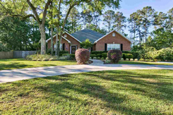Большой живописный спальный район на севере города со множеством парков, скверов, прудов и мелких озёрец. По праву он мог бы считаться элитным, если бы не его соседство с огромным промышленным районом. Однако именно благодаря этому факту многие представители среднего класса смогли позволить себе жильё в данном районе. И, судя по всему такое сомнительное соседство их совсем не омрачает.
Миккошеки-Сентервилл
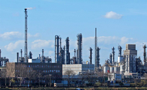Большой промышленный район на северо-востоке города. Основная часть построек и комплексов в районе - фабрики, заводы и склады, где трудятся жители города и близлежащих окрестностей. Большинство рабочих - люди без способностей. Также есть и автоматизированное производство. Помимо производственных зданий на юге района вблизи магистрали I-10 расположено несколько жилых кварталов.
Брюстер

Район, расположенный вдоль Махан Драйв между центром города и промышленной зоной. Здесь есть всё - и жилые квартары, и небольшие торговые центры и даже мелкое производство. И всё же как минимум одно примечательное место найдётся даже в таком разношёрстом районе: это музей автомобилей, расположенный в западной части района вблизи магистрали I-10.
Хидден Вэлли

Обычный, ничем не примечательный небольшой жилой район на северо-востоке города.
Истгейт

описание
Беттон

Крупный район чуть севернее центра города, в самом сердце которого расположен комплекс зданий городской больницы. Помимо больницы здесь есть и жилые кварталы с небольшими супермаркетами и фермерскими рынками.
Глендейл

описание
Хидден Лейкс

описание
Сетлерс Спрингс

описание
Уэстовер

Этот район по праву можно назвать вторым по уровню преступности в городе после гетто. Здесь собрались самые "сливки" падшего общества - наркодилеры, "торчки", проститутки, игроки, воры и прочие им подобные. В отличие от гетто, большинство местных являются агрессивно настроенными прекларусами, готовыми шмальнуть фаерболом или выкрутить суставы одним ментальным воздействием, поэтому добропорядочные граждане стараются не иметь с ними дел.
Сан Луис

Гуляя по улицам этого района нетрудно понять, что бо́льшая часть его населения - латиноамериканцы и афроамериканцы. Сан Луис с натяжкой можно назвать спокойным местом: здесь повсюду заведения с сомнительной репутацией вроде отелей и баров с подпольными бойцовскими клубами и наркопритонами. Однако их владельцы дорожат своей репутацией и делают всё необходимое, чтобы уберечься от пристального взора органов правопорядка.
Френчтаун

Как можно понять из названия, этот район многое связывает с культурой Франции. В первую очередь он известен своими великолепными ресторанами, кафе и закусочными, где можно отведать блюда не только французской, но и другой средиземноморской кухни, а также отелями на любой вкус и кошелёк. Многие гости города останавливаются в этом районе.
Колледж Таун
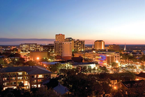Деловой центр города, в котором расположены Капитолий, мэрия, библиотека и университет. Кажется, что жизнь кипит здесь круглосуточно, даже глубокой ночью. И это естественно, ведь помимо правительства, сливок общества и деловых людей сюда каждый день приезжают десятки туристов, которые в любую погоду неустанно изучают интересные места города, коих в Даунтауне великое множество.
Чапел Ридж

описание
Провиденс

описание
Международный аэропорт Таллахасси
Один из крупнейших аэропортов Флориды, расположен в 5 милях к югу от Даунтауна города. Несмотря на своё название, не имел международных направлений вплоть до 2028 года, когда Таллахасси стал столицей США.
Брадфорд

описание
Либерти Парк

описание
Уилсон Грин

До череды двух громких убийств этот спальный район на юге города считался тихим, приятным и спокойным, как и несколько других граничащих с ним районов. Но потом ситуация изменилась: всё лето здесь усиленно работали патрульные службы, а местные жители старались избегать прогулок в одиночку по тихим скверам, особенно вблизи реки Мансон-Слау и в тёмное время суток. Сейчас жизнь района постепенно возвращается в привычное русло.
Оак Ридж
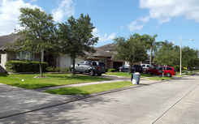описание
Лейквуд

Относительно тихий спальный район на юге города, где живут преимущественно небогатые граждане. Вдоль улиц простые одноэтажные дома расположены в основном хаотично. Однако даже в таком районе есть несколько участков с коттеджными домами, принадлежащими явно более обеспеченным жителям.
Шеферд

описание
Бикон Хилл

описание
Вудленд

описание
Лафайетт
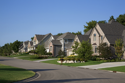Большой живописный спальный район для состоятельных и просто небедных жителей города. Он имеет удобное расположение от центра, куда можно добраться по дороге Восток Парк-авеню, по пути проезжая мимо главных торговых и развлекательных точек города.
Единственной ложкой дёгтя в этой бочке мёда до 2022 года была исправительная колония на Капитал Сёркл, поэтому было принято решение отстроить новое здание на юге в районе Шеферд, а старое снести.
Медоубрук

описание
Таун Восток

описание
Ферндейл Плейс

Торгово-развлекательный район в самом сердце города. Здесь находится известный торговый центр Governor's Square Mall, где можно пройтись по дорогим и не очень дорогим бутикам, а также поужинать в ресторанах или кафе. Помимо торгового центра здесь есть парк, кинотеатр, несколько универмагов, магазин электроники и кафе быстрого обслуживания.
Гетто

Место обитания людей без способностей, у которых нет тыла в виде близких родственников-прекларусов. Здесь царит атмосфера упадка. Многие живут за чертой бедности в полуразрушенных многоэтажках, похожих на общежития. Тем не менее, даже здесь находятся добровольцы, пытающиеся навести порядок и поднять боевой дух ущемлённых в правах жителей.
Мэрия

описание
Персонал:
- Мэр:
- Daniel Crow
- Служащие:
- Avis Hunt (помощник мэра)
- Andrew Hunt (пресс-секретарь)
Публичная библиотека Лероя Коллинза
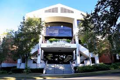Публичная библиотека округа Леон была основана в мае 1955 года. На момент открытия, состоявшегося 21 марта 1956 года, на её полках находилось около 5000 томов. 17 сентября 1993 года заведение было переименовано в Публичную библиотеку Лероя Коллинза округа Леон в честь 33-го губернатора Флориды Лероя Коллинза.
Система публичных библиотек Лероя Коллинза округа Леон обогащает сообщество, вдохновляя его на любовь к чтению, предоставляя местным жителям динамичный ресурс для творческих, интеллектуальных и развлекательных занятий.
Персонал:
- Руководитель:
- ...
- Сотрудники:
- Aaron Hunt (библиотекарь)
НИИ "Кадуцей"
описание
Персонал:
- Руководители:
- Dietrich von Witzleben
- Jonathan Pierce
- Сотрудники:
- Ophelia Lindholm
- Ian Syversen
- Anthony O'Dwyer
- Loreley Maureen
- Подопытные:
- Aleister Crowrey
Больница Таллахасси Мемориал
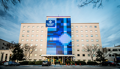Один из самых крупных медицинских центров в городе, куда ежедневно приходят сотни граждан, чтобы поправить здоровье. В комплексе зданий есть все необходимые отделения и филиалы для полного обследования: терапевтическое отделение, отделение интенсивной терапии, стоматология, женская консультация и родильный дом, кожно-венерологический диспансер, центр лечения онкобольных и прочие.
Университет штата Флорида

Университет был создан в 1851 году и является одним из старейших вузов в штате Флорида. Он включает в себя 16 отдельных колледжей и более 110 центров, помещений, лабораторий и институтов, которые предлагают более 300 программ обучения, в том числе профессиональных программ. Помимо этого, университет славится очень высокой исследовательской деятельностью.
Персонал:
- Преподаватели:
- Oliver Ridley (психология)
- Студенты:
- Loreley Maureen
- ...
Федеральная тюрьма
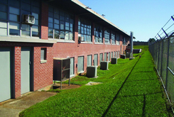Исправительное учреждение общего режима, в котором осуждённые отбывают наказания. Старое здание тюрьмы на Капитал Сёркл было снесено после открытия нового здания в 2022 году на Олд-Сейнт-Огастин-Роуд.
Департамент полиции

Это небольшое малопримечательное здание является штабом городской полиции.
Персонал:
- Капитан:
- ...
- Полицейские:
- James Hawk (детектив)
- ()
- WASP
- Matthew Knight (офицер)
Кладбище Роузлон

Место, где усопшие жители нашли своё последнее пристанище. Кладбище открыто ежедневно до 8 часов вечера, после чего охрана делает обход и провожает припозднившихся граждан перед закрытием. Здесь тщательно следят за порядком и за последние годы ещё не было случаев с кладбищенскими тусовками представителей субкультур и прочим кощунством.
Железнодорожная станция
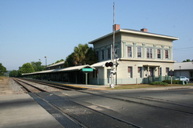Все пути ведут... нет, не в Рим! В Таллахасси. Для тех, кто ещё не привык или не желает перемещаться по воздуху, по-прежнему существует железная дорога. Станция удобно расположена практически в самом сердце города близ Даунтауна. А поезда компании "Амтрак" не один десяток лет обеспечивают перевозки пассажиров на дальние расстояния.
Ночной клуб "Луна"
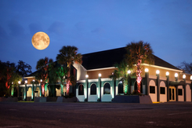Известный ночной клуб, существующий в городе вот уже более 50 лет. Здесь всегда звучит музыка, а танцпол и VIP-ложа заполнены посетителями. Но, возможно, не только концерты известных музыкантов и шоу со спецэффектами делают это место столь популярным, но и эскорт-агентство, о котором, впрочем, знают только доверенные лица.
Персонал:
- Владелец эскорт-агентства:
- Cinderella Vortigern
- Работники эскорт-агентства:
- Anna Hunt (администратор)
- Eva Lindberg (эскорт)
- Atlantis Underwood (эскорт)
- Orion Weiss (эскорт)
- Постоянные клиенты:
- Jack Hurrell
Редакция газеты " Tall' weekly"

описание
Супермаркет

Ничем с виду не примечательный супермаркет, куда каждый день ходят местные жители за товарами первой необходимости. Однако особо внимательного посетителя наверняка насторожит тот факт, что дверь в подсобное посещение по каким-то не вполне очевидным причинам пользуется особой популярностью не только у персонала магазина...
Эпизоды:
- [17.07.2043] bada boom
Бар "Керосиновая лампа"

Это место не для всех. Пользуется дурной славой. Говорят, там был наркопритон, но слухи не подтвердились. Дешёвое пойло, тусклый свет и странные звуки. Хотите приключений на свою пятую точку? Вам сюда.
Мост через реку Мансон Слау

Мост через реку Мансон Слау на Спрингхилл Роуд - место обнаружения первой жертвы серийного убийцы.
Дом Бриттани Хорн
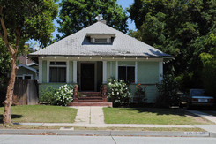Небольшой дом на Стаффорд Стрит, принадлежавший Бриттани Хорн - художнице, которая обнаружила голову первой жертвы, найденной под мостом, и которая сама впоследствии стала жетвой серийного убийцы. На заднем дворе есть сарай, оборудованный под рабочее место художницы.
Дом семьи Ридли
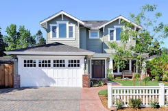Обычный двухэтажный частный дом, каких великое множество в спальных районах. Всё бы ничего, но только владелец знает, что в подвале находится секретная лаборатория, которой нет на плане дома.
Обитатели:

F.A.Q.
Перед вами интерактивная карта Таллахасси. Она представлена для лучшего понимания текущего положения дел в городе и для удобства навигации. Чтобы узнать больше о каком-либо месте, нажмите на интересующую область.
- Условные обозначения:
- Благополучный район - район, где проживают преимущественно обеспеченные граждане, либо находящийся во владении крупной корпорации. Здесь не лежат мусорные кучи на обочинах, поскольку за чистой и порядком тщательно следят как местные жители, так и соответствующие службы.
- Обычный район - район, по которому можно перемещаться без риска для жизни. Уровень бедности здесь невысок, за порядком следит полиция.
- Неблагополучный район - район с высоким уровнем преступности и бедности, где среди местных жителей царят упаднические настроения. Это не то место, где можно без риска для жизни прогуливаться ночью по улице, особенно если ты выделяешься на фоне местных жителей...
- - важные места в городе, с которыми могут быть связаны какие-либо сюжетные события, а также дома персонажей и локации за городской чертой.
Copyright
Вёрстка, дизайн и описание локаций - Alex Kolmar. Карта - Участники OpenStreetMap.
Полное или частичное копирование кода и информации запрещено.